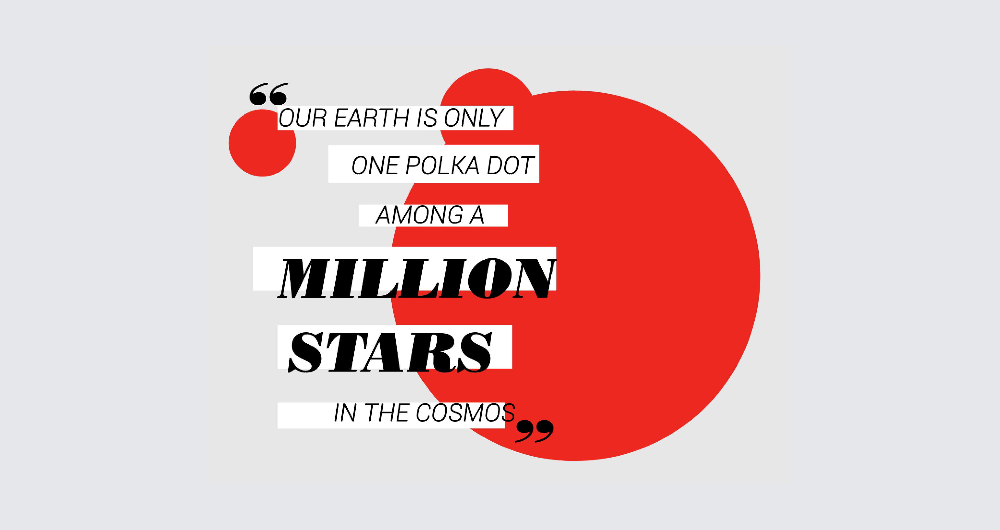
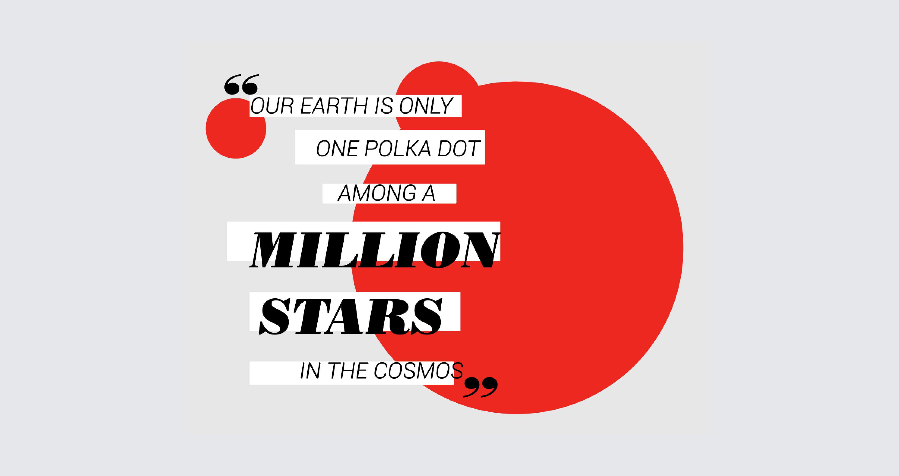

As a class project experimenting with editorial design, I created a print layout and tablet version of an article on Japanese contemporary artist Yayoi Kusama. Kusama's Infinity Room installations and polka dot motifs have made her work hugely popular on social media in the past years.
The article text is compiled from three separate interviews with the artist and presented as a BOMB Magazine piece.
VIEW THE ARTICLE PDF
VIEW THE FULL PROCESS BOOK

 
